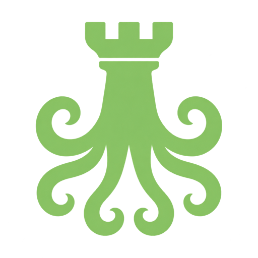
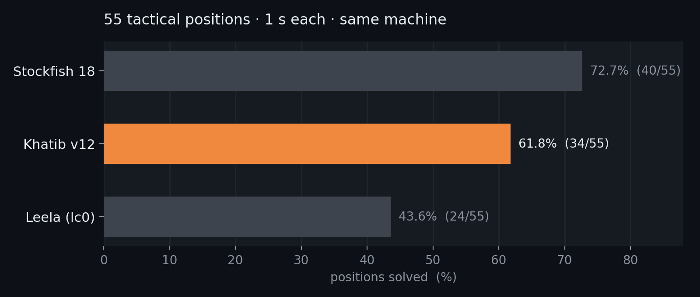
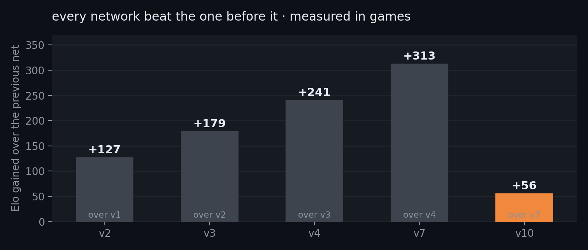

Khatib
A chess engine in Rust with an NNUE neural-network evaluation.
By Nassim Khatib
Benchmark
Thirty hard positions, one second each, all three engines on the same machine.

| Engine | Solved |
|---|---|
| Stockfish 17 | 14 / 30 |
| Khatib | 12 / 30 |
| Leela (lc0) | 10 / 30 |
Khatib scores 11–12 across runs, so the gap to Stockfish is small but real. Stockfish is a far more mature engine and this doesn't claim to match it.
Still training
Each network was kept only after beating the previous one in real games.

The next architecture — 2048 wide with a second hidden layer — is written and numerically verified, but untrained. It needs GPU time.
Install
Needs Rust. Builds in about a minute.
git clone https://github.com/Nesbesss/khatib-chess
cd khatib-chess
cargo build --release
./target/release/chess # UCI mode, for any chess GUI
./target/release/chess serve # search visualizerPlay against it
Khatib speaks UCI, so any standard chess program can use it. Install a free GUI — Cute Chess, Arena, or BanksiaGUI — and point it at the binary.
On Lichess it can run as a real bot account anyone can challenge. Chess.com has no way to connect your own engine, and using one in their games is a permanent ban — so Lichess is the place for this.
Inside
| Move generation | magic bitboards, 33/33 perft exact |
| Search | alpha-beta, TT, LMR, null-move, countermove history |
| Evaluation | NNUE, 768×8 → 1536×2 → 8 buckets |
| Threading | Lazy SMP, depth 19 → 22 on 8 threads |
Every change was accepted or rejected by playing hundreds of games, never by node counts — those misled repeatedly.